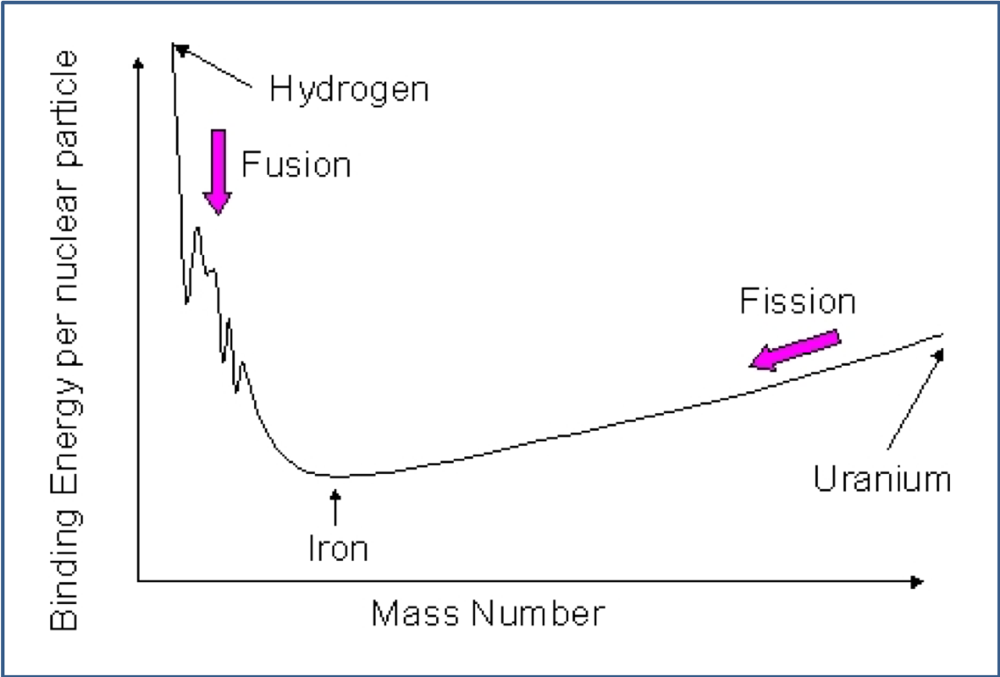

7 Mass-luminosity relationship revisited
In Chapter 2 we saw that for main sequence stars there is a mass-luminosity relationship (Equation 10.1), often just indicated using \(\alpha=3.5\) as exponent: \[ L\propto M^{3.5}. \tag{7.1}\]
Why the exponent 3.5?
Let’s see if we can approximate this with our new understanding
First, show that the core temperature is proportional to M/R:
\[ \begin{align} T_0 &\propto \frac{P_0}{\rho_{av}} \\ &\propto \frac{\rho_{av}^2 R^2}{\rho_{av}} \\ &\propto \rho_{av} R^2 \\ &\propto \frac{M}{R} \end{align} \tag{7.2}\]
Let’s assume that surface temperature is propotional to the core temperature (actually it depends slightly on \(R\)): \(T_0\propto T\).
Use Stefan’s Law: \[ \begin{align} L&=4\pi R^2 \sigma T^4 \\ L&\propto \frac{R^2M^4}{R^4} \\ &\propto \frac{M^4}{R^2}. \end{align} \tag{7.3}\]
However, \(M\propto R^3\), so \(R^2\propto M^{2/3}\).
Substitute into the previous expression to get: \[\begin{align} L &\propto \frac{M^4}{R^2} \\ L&\propto \frac{M^4}{M^{2/3}}\\ L&\propto M^{3.3} \end{align}\]
So using our crude approximations we can find an exponent nearly equal to 3.5.
8 Main sequence lifetime
The most massive stars are the most luminous
The amount of fuel available is proportional to the star’s mass, so we can work out the main-sequence lifetime (from Equation 5.1): \[ \tau_{MS} \propto \frac{M}{L} \propto M^{-2.5}. \tag{8.1}\]
So more massive stars evolve faster and spend less time on the main sequence.
The reason why most stars are on the main sequence is also related to what we saw in Chapter 5 when we discussed the timescales.
In pre-main-sequence stars, the dominating timescale is the thermal Kelvin-Helmoltz (KH) timescale, of the order of \(10^7\) years.
Main and post-sequence stars however are dominated by the nuclear timescale, which is of the order of \(10^{10}\) years.
These 3 orders of magnitude of difference mean that we are most likely to find a star on the main sequence. However, when switching to burning other chemical sources, the KH timescale can become relevant again as gravitational energy plays a role again. We will discuss this further during the rest of the chapter.
The Zero Age Main Sequence (ZAMS) is the time when a start first enters the main sequence in the HR diagram. At this stage it is burning hydrogen through nuclear fusion at its core.
po
8.1 More rigorous derivation of main sequence lifetime
Let’s find the MS lifetime more rigorously.
- Let’s assume that stars leave the main sequence when they convert 20% of their hydrogen fuel into helium
- If this releases \(\Delta E\) Joules of energy per kilogram of hydrogen, then Luminosity = total energy released / main sequence lifetime:
\[ L=\frac{0.2 M \Delta E}{\tau_{MS}} \tag{8.2}\]
- We can find the time on the Main Sequence, \(\tau_{MS}\) by rearranging Equation 8.2
\[ \tau_{MS}=\frac{0.2 M \Delta E}{L}\\ \tag{8.3}\]
We can use the mass-luminosity relationship Equation 10.1 to find \(L\)
We can use the Sun as a reference point to get around the unknown constants, because we know enough about it and we can work out its main sequence lifetime:
\[ \tau_{MS\odot}=\frac{0.2 M_\odot \Delta E}{L_\odot}=2\times 10^{10}\mathrm{years} \tag{8.4}\]
Dividing Equation 8.3 by Equation 8.4 and using the mass-luminosity relationship (Equation 7.1), we obtain that for a star on the main sequence the lifetime is: \[ \frac{\tau_{MS}}{\tau_{MS\odot}} = \frac{M}{M_\odot}\frac{L_\odot}{L} = \left(\frac{M_\odot}{M}\right)^{2.5} \tag{8.5}\]
\[ \tau_{MS} = 2\times 10^{10}\mathrm{yr} \left(\frac{M_\odot}{M}\right)^{2.5}. \tag{8.6}\]
The result of Equation 8.5 shows that a star 4 times as massive as the Sun has a main sequence lifetime that is \(4^{2.5}=32\) times shorter.
9 Star clusters
The stars in any given cluster were all formed at about the same time but with a wide range of masses
The stars in any given cluster are all about the same distance away, so when we see differences in apparent brightness it is because of differences in intrinsic brightness
They also have similar chemical composition, since they come from the same cloud.
9.1 Age of star clusters
There are two types of star clusters:
- Open clusters: young clusters, containing less than a few hundred stars which are loosely clustered. An example is M67 (shown in Figure 9.1 - left).
- Globular clusters: older stars which are gravitationally bound - groups of ten thousand to millions of stars. An example is M4 (shown in Figure 9.1 - right).
We can plot the stars in a cluster on an HR diagram.
The video below shows how stars from a globular cluster are catalogued on the HR diagram.
Let’s look at the examples in Figure 9.1.
- M67 is a young (open) cluster
- for a young cluster you see more of the Main Sequence
- M4 is an old (globular) cluster
- the Main Sequence lifetime is significantly shorter for the older cluster
- The location of the turnoff differs precisely because of the relationship derived earlier in Equation 8.6:
\[\tau_{MS} = 2\times 10^{10}\mathrm{yr} \left(\frac{M_\odot}{M}\right)^{2.5}. \]
- To find the age of a cluster, we look for the highest mass star still on the Main Sequence – a star near the top-left hand side of the HR-diagram
- This star, at the turnoff point, will allow us to determine the age of the cluster
- The cluster age is equal to the main-sequence lifetime of the turnoff stars
- Use this mass of the stars at the turnoff point in Equation 8.6 to find the age of the cluster: \[ \tau_\mathrm{{cluster}} = 2\times 10^{10}\mathrm{yr} \left(\frac{M_\odot}{M_\mathrm{{turnoff}}}\right)^{2.5}. \tag{9.1}\] The ages of clusters are important for determinations of the age of the Universe
10 Evolutions of stars - interactive simulator
Here is a source to play with that is useful for the following, where we will see how stars of different masses evolve. Try to run it for low-mass stars and high-mass stars, monitoring the different stages of the evolution and how the position on the HR diagram, the radius, the temperature and the luminosity of the stars change during the simulation.
11 Evolution of low-mass stars (\(\sim 1 M_\odot\))

11.1 Hydrogen fusion
- While the star burns Hydrogen, the mean molecular weight \(\mu\) at the core increases
- According to the ideal gas law (Equation 9.7), to keep enough pressure and support the outer layers, the density of the core must increase, so the core is compressed
- With the core compression, gravitational potential energy is released: half goes into thermal kinetic energy, as per virial theorem (Equation 7.6), half is radiated away
- The temperature starts increasing slowly and as a consequence the region where hydrogen fusion can happen also increases slightly
- The increase in p-p chain nuclear reaction rate generates more radiation pressure and it increases the stars luminosity, radius and effective temperature.
11.2 Red Giants
- Eventually H-He reactions stop in the core
- The radiation pressure then drops and gravity begins to triumph - the core collapses
- The temperature of the core increased to \(10^8\) K
- The Helium core is surrounded by a Hydrogen burning shell where nuclear fusion still occurs.
At the beginning of the chapter we mentioned that the nuclear timescale is the main one once the star enters the ZAMS, but when switching between nuclear sources, the KH timescale becomes important again because the star undergoes further variations in size.
The increased luminosity given by the hydrogen shell burning provides extra radiation pressure.
- The outer envelope of gas inflates and cools
- For a star of \(\sim 1M_\odot\), this equates to a radius of \(\sim 100R_\odot\)
- The star moves in the Red Giant Branch towards the right (red) in the HR diagram, as visible in Figure 11.1 and Figure 11.3.
A high luminosity star with cool outer regions is called a Red Giant.
11.3 Helium fusion: Triple-alpha process
At this point Helium starts to fuse to carbon in the core. The fusion of helium is triggered by the Helium flash (Figure 11.1, Figure 11.3) and is due to the triple-alpha process (Figure 11.2).

\[ \begin{align} ^4He +\ ^4He \rightarrow ^8Be+\mathrm{energy} \\ ^4He +\ ^8Be \rightarrow ^{12}C+\mathrm{energy} \\ ^4He +\ ^{12}C \rightarrow ^{16}C+\mathrm{energy} \end{align} \tag{11.1}\]
Three alpha particles (\(^4He\)) are used to make \(^{12}C\), then another one is used to make \(^{16}C\).
Helium fusion is a highly exothermic process (it releases a lot of heat)
The temperature of the core climbs further
More un-burned hydrogen fusion around the core
The core contracts, so the luminosity decreases and the effective temperature increases (see Figure 11.1).

11.4 Red Supergiants
When the Helium core burning stops (after the Horizontal Branch), there is a further collapse and rise in temperature, where the star moves on the Asymptotic (Giant) Branch in the HR diagram (Figure 11.1, Figure 11.3).
- The shell of Helium around the core starts to burn
- Carbon ash core left from Helium fusion (see Figure 11.4)
- It pulses slowly and its luminosity increases by a factor of about 10 over a period of about 5000 years.
The star becomes a Red Supergiant.

11.5 Instability and evolution to White Dwarf
The star is now unstable!
- The outer layers separate and are blown off
- This process accounts for about half the star’s mass.
A planetary nebula is formed (see Figure 11.5) and the hot core is exposed (despite the name, this has nothing to do with planets).
- When all the helium fuel is used up, the star is supported by degeneracy pressure (we will discuss this further in Chapter 8).
It slowly cools to become a White Dwarf.
12 Evolution of High-Mass Stars (\(\ge 8M_\odot\))
Evolution is similar to that of low mass stars but there is added gravitational pressure due to the higher mass and a convective core that mixes the elements. This is because the timescale associated to the convection is shorter than the nuclear timescale.
- Higher temperatures are possible
- More (different) nuclear reactions are possible
- Shells of heavier elements surrounding core (Figure 12.1).
12.1 Hydrogen fusion
- The size of the convection core decreases during Hydrogen fusion
- The higher the mass of the star, the faster the convection zone shrinks
- The temperature of the hydrogen shell surrounding the core increases
- Slight increase in luminosity and of the radius
- The effective temperature decreases.
12.2 Helium fusion
When the Hydrogen is almost all burnt at the core, the entire star shrinks.
- Increase of luminosity due to the release of gravitational potential energy
- Increase of effective temperature due to the star’s contraction.
12.3 Metals fusion
After Helium is used up, the core collapses until degeneracy sets in to stop the star shrinking.
- At this stage the KH timescale is the dominating one
- The effective temperature of the star drops and the star enters the subgiant branch, moving towards the red, and then enters the red giant branch
- Core temperature goes up and Helium-Carbon fusion starts.
At this stage nuclear burning happens in the core and in concentric ring of elements that get restructured during the rest of the evolution, while being burned.
- This cycle repeats through heavier and heavier elements up to Iron
- The star consists of concentric shells – the onion model of the interior (Figure 12.1)
12.4 Iron Catastrophe
So why are reactions happening up to iron?
For each cycle of reaction, the atoms get smaller and smaller, more tightly packed and therefore more stable. Iron-56 is one of the most tightly bound nuclei.
- Fusion reactions are exothermic (release energy) only if the reactants are lighter than Iron
- Fission reactions (the other kind of nuclear reaction) are exothermic only if the reactants are heavier than Iron
- So after a certain point ( i.e. when iron has been produced) fusion stops producing energy and no other energy-producing nuclear process can take place.

12.5 Supernova
- At this point the core has no more nuclear fuel left to sustain the high temperature and pressure
- But the core is too massive to be supported by degeneracy pressure, so
- The core collapses – in ~ 0.25 seconds !
- Resulting in the formation of a neutron star or a black hole
- The outer layers of the star are blown off – the supernova remnant.
In the table below you can see the timescales and temperatures associated to the different stages of a high-mass star evolution.
| Event | Temperature (K) | Time |
|---|---|---|
| Hydrogen Burning | \(4\times 10^7\) | \(7\times 10^6\) years |
| Helium Burning | \(2\times 10^{8}\) | \(7\times 10^5\) years |
| Carbon Burning | \(6\times 10^8\) | 600 years |
| Neon Burning | \(1.2\times 10^9\) | 1 year |
| Oxygen Burning | \(1.5\times 10^9\) | 6 months |
| Silicon Burning | \(2.7 \times 10^9\) | 1 day |
| Core Collapse | \(5.4\times 10^9\) | 0.25 seconds |
| Supernova! | - | - |